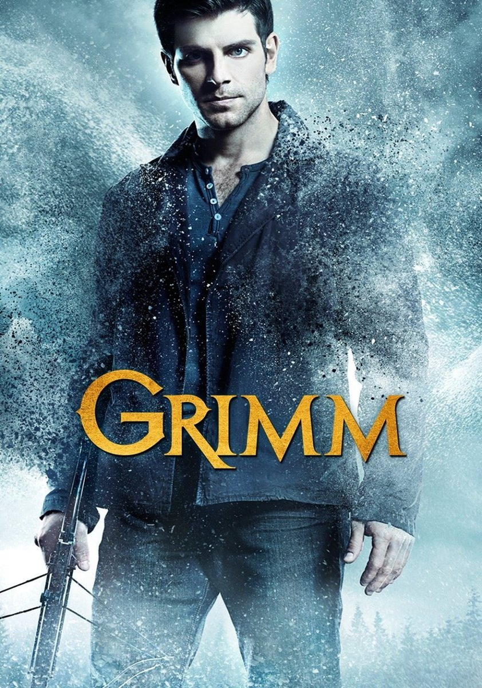
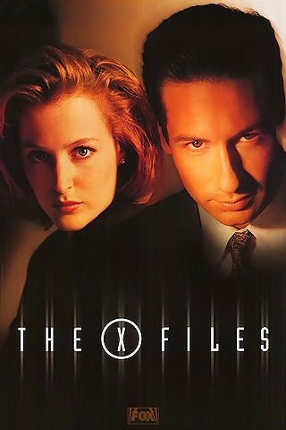
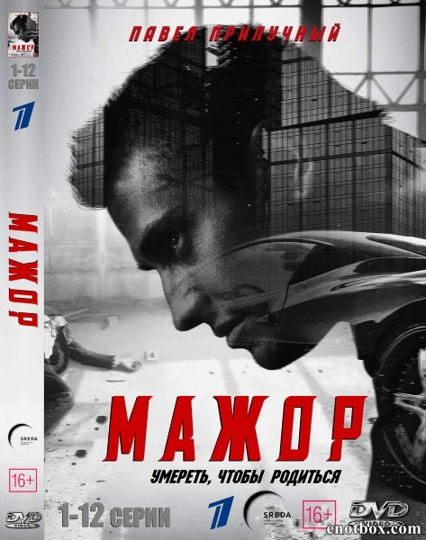

Действие происходит в современном Портленде, где детектив из отдела убийств узнаёт, что он является потомком группы охотников, известных как «Гриммы», которые сражаются, чтобы сохранить человечество в безопасности от сверхъестественных существ. Узнав о своей судьбе, и том, что он является последним из своего рода, он должен защитить каждую живую душу от зловещих персонажей сборника сказок, которые проникли в реальный мир.
 События в сериале начинают разворачиваться по прошествии девяносто семи лет после того, как всю цивилизацию уничтожила страшная атомная война. Высоко в космосе на орбите Земли летает большой космический корабль, где находятся те, кто выжил после страшной катастрофы. Именно с этого последнего пристанища людей на Землю отправляют космический челнок, на котором находятся сто малолетних преступников...
События в сериале начинают разворачиваться по прошествии девяносто семи лет после того, как всю цивилизацию уничтожила страшная атомная война. Высоко в космосе на орбите Земли летает большой космический корабль, где находятся те, кто выжил после страшной катастрофы. Именно с этого последнего пристанища людей на Землю отправляют космический челнок, на котором находятся сто малолетних преступников...

Агентам ФБР Дане Скалли и Фоксу Малдеру поручают работу над проектом «Секретные материалы». Это архив нераскрытых дел, связанных с паранормальными явлениями. Малдер верит в пришельцев и пытается убедить скептика Скалли, что не всё поддаётся разумному объяснению. Постепенно взаимное недоверие перерастает в дружбу и даже в более глубокое чувство.

Таких, как наш главный герой Игорь Соколовский, то есть детей высокопоставленных, богатых родителей, называют мажорами. Наш герой имеет юридическое образование, но ни одного дня не проработал. Безответственный прожигатель жизни. В один из загулов ночью он вступился за приятеля, подрался с полицейскими, выбил табельное оружие у офицера... В итоге отец лишает героя всего и отправляет работать в отделение полиции - то самое, в котором служат ночные полицейские. Его, мажора, там не ждут. Его презирают. Но именно там он начнет становиться мужчиной, встретит свою любовь и найдет убийцу мамы.